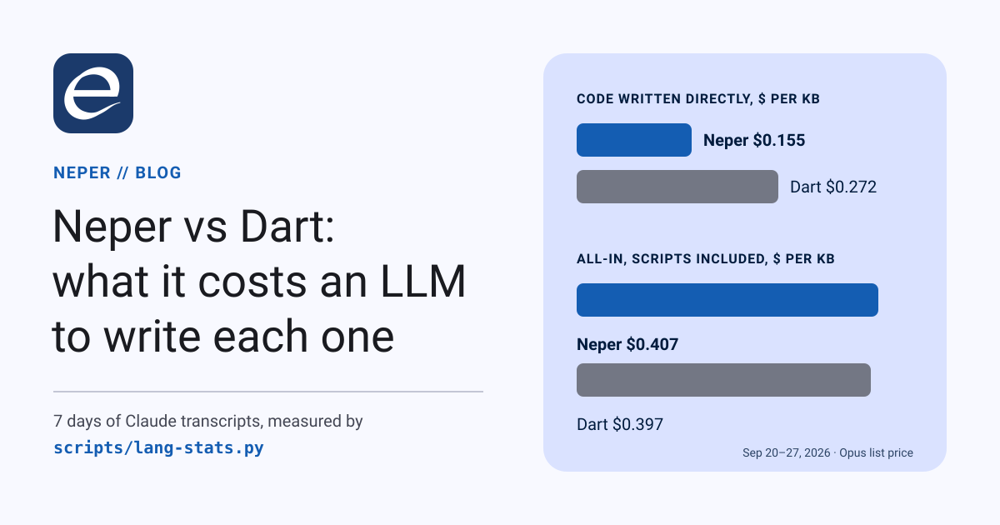
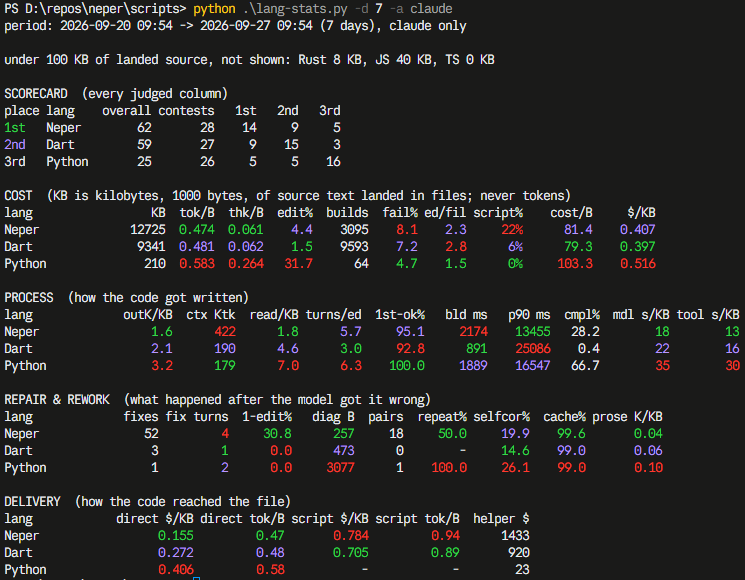

Neper vs Dart: what it costs an LLM to write each one

Neper claims to be optimized for LLM-generated software, so we measure it the way we would measure a compiler: on real work. For the last seven days Claude wrote 12.7 MB of Neper and 9.3 MB of Dart in our repositories. Neper came out first on our scorecard, 62 to 59, at the same cost per kilobyte. It was not a clean sweep, and the losses are more useful than the win.
How we measure
scripts/lang-stats.py reads every Claude Code transcript on the machine and follows each byte of source to the file it landed in, whether it arrived through the Write and Edit tools, a shell heredoc, a patch.exe spec or a Python patch script. A KB is 1,000 bytes of landed source, never tokens. Every token is priced at the Opus list rate, so dollars compare effort, not bills.
The script judges 28 columns across cost, rework, correctness, time, context load and style, and ranks each language in each column. The scorecard is the mean of those ranks, from 0 (worst in every column) to 100 (best in every column).
Two caveats before any numbers:
- Claude only. Codex also writes Neper for us, about 10% of it, and none of our Dart. Pooling it put Codex's 15.5% build-failure rate on Neper's row against a Dart row that Codex never touched. The run below uses
--harness claude, which reads one agent's transcripts and nothing else. - Different projects. The Neper work is its compiler, its standard library, its UI library and their tests: 271,597 lines added in git this week. The Dart work is an application, Celvyx: 207,691 lines. This is one team's week, not a controlled experiment.

python scripts/lang-stats.py -d 7 -a claude, September 20–27, 2026. Green marks the best value in a column, cyan the second best, red the worst.Where Neper wins
| Column | Neper | Dart |
|---|---|---|
| $ per KB of code written directly | 0.155 | 0.272 |
| Output tokens per KB | 1.6K | 2.1K |
| Bytes read per byte written | 1.8 | 4.6 |
| Edits that built on the first try | 95.1% | 92.8% |
| Model seconds per KB | 18 | 22 |
| Tool seconds per KB | 13 | 16 |
When the model writes Neper directly it spends 43% less per kilobyte than it does on Dart, and emits a quarter fewer tokens for the same bytes. That is the small, single-meaning vocabulary doing its job: there is less to say and less to reconsider. The model also reads far less to write the same amount, and more of its edits build the first time.
Where Neper loses
| Column | Neper | Dart |
|---|---|---|
| Context at a turn that lands code | 422K tokens | 190K tokens |
| Share of code delivered by script | 22% | 6% |
| Turns from a compile failure to a passing build | 4 | 1 |
| Failed build commands | 8.1% | 7.2% |
| Median build command | 2,174 ms | 891 ms |
- Context is the real gap. Neper sessions are long-running and work on large files (the compiler's
src/main.ealone is 12,570 lines, andsrc/holds 73,000), so each turn carries 2.2× the context of a Dart turn and an edit takes 5.7 turns against 3.0. The compiler can already answer with the few kilobytes one edit needs; the sessions do not ask it yet. - Scripts erase the direct-edit advantage. Code that arrives inside a Python patch script costs $0.784 per KB, five times a direct edit. At 22% of Neper's code that is exactly why the all-in cost ($0.407) lands next to Dart's ($0.397) instead of well below it.
- Repairs take too long. 52 compile failures took four turns each to fix, and half of them repeated the previous error code. The messages are the reason:
type checking failed: check.UnknownCallablenames no callee, andinvalid tokendoes not say that\u000Fis not an escape. A model cannot act on what a message does not name. The Dart side of this column is thin (three fixes in a week), and we suspect our detector misses the analyzer's format, so read “4 vs 1” as a problem to fix, not a settled ratio. - Two columns overstate the problem. Nearly half of the week's failed build commands (116 of 266) were shell and harness failures, not the compiler. The build time is the wall time of a whole command, tests included. A Neper compile of the compiler itself takes about 1.7 seconds on this machine.
The trend is the good news
The same measurement over 30 days, Claude only:
| Neper | 30 days | 7 days |
|---|---|---|
| $ per KB, all-in | 0.691 | 0.407 |
| Share of code delivered by script | 38% | 22% |
| $ per KB, written directly | 0.198 | 0.155 |
| Context at a turn that lands code | 513K | 422K |
| Thinking tokens per byte | 0.069 | 0.061 |
| Failed build commands | 4.9% | 8.1% |
| Turns to fix a compile failure | 2 | 4 |
Most of the cost drop has one cause. On September 26 a small Neper program, tools/patch, replaced the Python scripts sessions had been using to patch the compiler: those went from 254 and 326 a day to one. Over 30 days, with scripts carrying 38% of the code, Neper cost 35% more than Dart per KB. Over the last seven it costs the same.
Measuring this found three bugs in the measurement. patch.exe edits were invisible, 326 KB of them. Any command that mentioned the repository's path counted as a build, which made 30–58% of the weekly “builds” a cd or a git log. And pooling agents compared Codex's Neper with Claude's Dart. All three are fixed. Three more distortions are queued: build failures after a patch script counted as failed edits, probe programs in scratch folders counted as landed code, and the Dart compile detector.
What we are doing about it
- Diagnostics that name their subject: the callee, the missing name, the two counts, the legal escapes. One fixture per recurring code, tracked by how often the next build repeats it.
- A machine-applicable rename. The most frequent compile error is a local that reuses a module-scope name. Neper forbids that shadowing on purpose, one meaning per name at every position, so the fix is a repair the tools apply without a model turn, not a looser rule.
- Route agents to the compiler's context instead of whole files, and to a “traps” section in the language card: reserved names, the no-shadowing rule, the escape set. The targets are context near 200K and a script share near Dart's.
- A warm rebuild that is actually warm. A repeated build of an unchanged program should take the incremental path we have measured at 80 ms for the compiler.
Every number above comes from one command, and the script is in the repository:
$ python scripts/lang-stats.py --harness claude -d 7Run it on your own transcripts. If your numbers disagree with ours, we want to know.